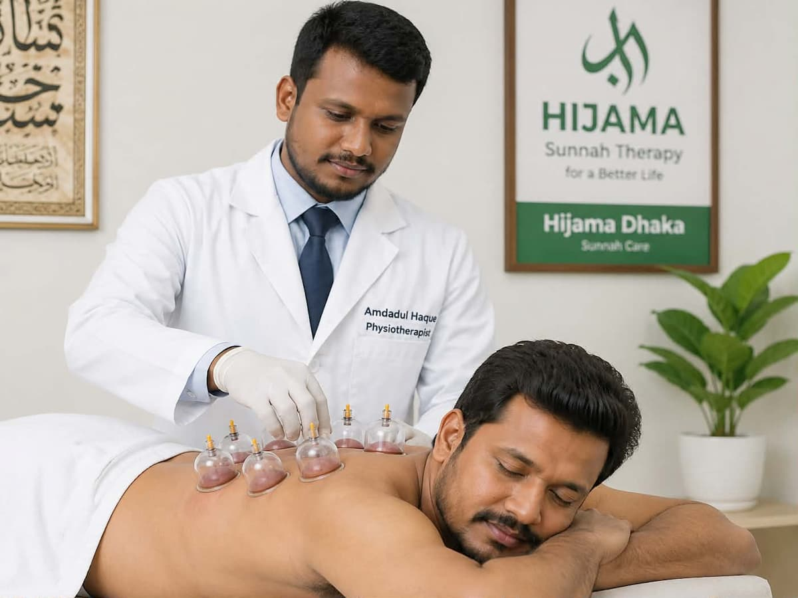

Hijama in Lalbagh — নির্ভরযোগ্য Sunnah Hijama ও Wet Cupping Therapy
Lalbagh, Azimpur, Bakshi Bazar, Chawkbazar এবং পুরো Old Dhaka এলাকায় অভিজ্ঞ, প্রশিক্ষিত থেরাপিস্টদের হাতে Sunnah পদ্ধতিতে Hijama ও Wet Cupping Therapy করিয়ে নিন। ১০০% ডিসপোজেবল কাপ ও নিডল, সম্পূর্ণ পর্দা-সম্মত পরিবেশ, এবং প্রয়োজনে Home Hijama Service in Lalbagh-এর সুবিধা।

Hijama Therapy Lalbagh নেওয়ার প্রধান উপকারিতা
নিয়মিত ও সঠিক পদ্ধতিতে Hijama করালে শরীরে বিভিন্ন ইতিবাচক পরিবর্তন লক্ষ্য করা যায়। নিচে সবচেয়ে সাধারণভাবে উল্লেখিত উপকারিতাগুলো তুলে ধরা হলো।
রক্ত সঞ্চালন উন্নত করে
Wet Cupping Therapy শরীরের নির্দিষ্ট পয়েন্টে রক্ত চলাচল সক্রিয় করতে সাহায্য করে, যা শরীরকে সতেজ অনুভব করাতে পারে।
শরীর থেকে টক্সিন বের করে
Hijama-র মূল ধারণাই হলো দূষিত রক্ত (Fasid Dam) শরীর থেকে নিয়ন্ত্রিতভাবে বের করে দেওয়া, যা প্রাচীন Sunnah পদ্ধতি হিসেবে পরিচিত।
ব্যথা ও ক্লান্তি কমাতে সহায়ক
কোমর ব্যথা, ঘাড় ব্যথা, মাইগ্রেন ও পেশির ক্লান্তির ক্ষেত্রে অনেকে Hijama-কে একটি সহায়ক থেরাপি হিসেবে বেছে নেন।
ঘুম ও মানসিক প্রশান্তি
থেরাপি পরবর্তী সময়ে শরীর হালকা অনুভব হওয়ায় অনেক রোগী ভালো ঘুম ও মানসিক প্রশান্তির কথা জানান।
রোগ প্রতিরোধ ক্ষমতা
নিয়মিত Sunnah Hijama শরীরের প্রাকৃতিক ভারসাম্য বজায় রাখতে সহায়ক ভূমিকা রাখতে পারে বলে ঐতিহ্যগতভাবে বিশ্বাস করা হয়।
Sunnah অনুসরণ
Hijama একটি Sunnah আমল, যা রাসূলুল্লাহ (সাঃ)-এর হাদিসে বর্ণিত হয়েছে — অনেকে দ্বীনি ও শারীরিক উভয় কারণে এটি গ্রহণ করেন।
Hijama কী? — Wet Cupping Therapy সম্পর্কে বিস্তারিত
Hijama (হিজামা) হলো একটি প্রাচীন থেরাপিউটিক পদ্ধতি, যা আরবিতে "চোষা" শব্দ থেকে এসেছে। এই পদ্ধতিতে ত্বকের নির্দিষ্ট পয়েন্টে বিশেষ কাপ বসিয়ে হালকা ভ্যাকুয়াম তৈরি করা হয়, এরপর নিয়ন্ত্রিত ও অত্যন্ত সূক্ষ্ম ইনসিশনের মাধ্যমে দূষিত রক্ত (Fasid Dam) বের করে আনা হয়। একেই বলা হয় Wet Cupping Therapy, যা Dry Cupping থেকে আলাদা — কারণ Dry Cupping-এ কোনো রক্ত বের করা হয় না, শুধু ভ্যাকুয়াম সাকশন প্রয়োগ করা হয়।
ইসলামিক ঐতিহ্যে Hijama-কে একটি Sunnah চিকিৎসা পদ্ধতি হিসেবে গণ্য করা হয়। বিভিন্ন হাদিসে এর উল্লেখ পাওয়া যায়, যেখানে এটিকে উত্তম চিকিৎসা পদ্ধতিগুলোর একটি হিসেবে বর্ণনা করা হয়েছে। বাংলাদেশে, বিশেষ করে Old Dhaka ও Lalbagh এলাকায়, বহু মানুষ ধর্মীয় ও স্বাস্থ্যগত — উভয় কারণেই নিয়মিত Hijama করিয়ে থাকেন।
আধুনিক সময়ে Hijama Dhaka-এর মতো প্রতিষ্ঠানগুলো এই ঐতিহ্যবাহী পদ্ধতিকে আধুনিক হাইজিন স্ট্যান্ডার্ডের সাথে সমন্বয় করে সেবা প্রদান করে — যেখানে প্রতিটি টুল ডিসপোজেবল এবং প্রতিটি সেশন প্রশিক্ষিত থেরাপিস্ট দ্বারা পরিচালিত হয়।
How Hijama Works — কীভাবে কাজ করে
Hijama মূলত তিনটি ধাপে সম্পন্ন হয়। প্রতিটি ধাপ সতর্কতার সাথে অনুসরণ করা হয় যাতে রোগীর জন্য এটি নিরাপদ ও আরামদায়ক হয়।
-
ড্রাই কাপিং (প্রাথমিক ভ্যাকুয়াম)
নির্দিষ্ট পয়েন্টে কাপ বসিয়ে হালকা সাকশন তৈরি করা হয়, যাতে ত্বক ও নিচের টিস্যু কিছুটা ফুলে ওঠে এবং রক্ত সঞ্চালন সক্রিয় হয়।
-
সূক্ষ্ম ইনসিশন
ডিসপোজেবল ও জীবাণুমুক্ত ব্লেড ব্যবহার করে ত্বকের উপরিভাগে অত্যন্ত হালকা ও নিয়ন্ত্রিত দাগ কাটা হয় — এটি সম্পূর্ণ পেশাদার হাতে সম্পন্ন হয়।
-
দ্বিতীয় সাকশন ও রক্ত অপসারণ
পুনরায় কাপ বসিয়ে দূষিত রক্ত ধীরে ধীরে বের করা হয়। প্রয়োজন অনুসারে একাধিক পয়েন্টে এই প্রক্রিয়া পুনরাবৃত্তি করা হতে পারে।
-
ড্রেসিং ও পরামর্শ
থেরাপি শেষে জায়গাটি জীবাণুনাশক দিয়ে পরিষ্কার করে ড্রেসিং করা হয় এবং পরবর্তী যত্নের জন্য প্রয়োজনীয় পরামর্শ দেওয়া হয়।
কারা Hijama করাতে পারবেন
- সুস্থ প্রাপ্তবয়স্ক নারী ও পুরুষ, যাদের বয়স সাধারণত ১৮ বছরের বেশি
- দীর্ঘমেয়াদি কোমর, ঘাড় বা পিঠে ব্যথায় ভুগছেন এমন ব্যক্তি
- মাইগ্রেন বা মাথাব্যথায় ভোগা ব্যক্তি (চিকিৎসকের পরামর্শ সাপেক্ষে)
- যারা ধর্মীয় কারণে নিয়মিত Sunnah আমল হিসেবে Hijama করাতে চান
- যারা শারীরিক ক্লান্তি ও মানসিক অস্বস্তি থেকে স্বস্তি খুঁজছেন
কাদের Hijama এড়িয়ে চলা উচিত
- গর্ভবতী নারী
- রক্তক্ষরণজনিত সমস্যা
- গুরুতর রক্তস্বল্পতা (Anemia)
- সাম্প্রতিক বড় অপারেশন
- নিয়ন্ত্রণহীন উচ্চ/নিম্ন রক্তচাপ
- ত্বকের সংক্রমণ বা ক্ষত
- হার্টের গুরুতর সমস্যা
- রক্ত পাতলাকারী ঔষধ সেবনকারী
উপরের যেকোনো অবস্থায় থাকলে Hijama করানোর আগে অবশ্যই একজন নিবন্ধিত চিকিৎসকের পরামর্শ নিন।
Conditions We Treat — Hijama যেসব ক্ষেত্রে সহায়ক হতে পারে
নিচের বিষয়গুলোতে অনেকে Hijama Therapy-কে সহায়ক থেরাপি হিসেবে বেছে নেন। এটি প্রচলিত চিকিৎসার বিকল্প নয়, বরং একটি সহায়ক পদ্ধতি হিসেবে বিবেচিত।
কোমর ও পিঠে ব্যথা
দীর্ঘদিনের বসে থাকা কাজ বা ভারী পরিশ্রমজনিত কোমর ব্যথায় সহায়ক।
ঘাড় ও কাঁধের ব্যথা
মাংসপেশির টান ও দীর্ঘস্থায়ী ঘাড়ে ব্যথায় আরামদায়ক অনুভূতি দিতে পারে।
মাইগ্রেন ও মাথাব্যথা
নির্দিষ্ট পয়েন্টে Hijama করালে অনেকে মাথাব্যথায় উপশম অনুভব করেন।
জয়েন্ট ও হাঁটুর ব্যথা
আর্থ্রাইটিসজনিত অস্বস্তিতে সহায়ক থেরাপি হিসেবে ব্যবহৃত হয়।
মানসিক ক্লান্তি ও স্ট্রেস
শারীরিক ও মানসিক চাপ কমিয়ে প্রশান্তি আনতে সহায়তা করে।
রক্ত সঞ্চালনজনিত সমস্যা
শরীরের নির্দিষ্ট অংশে রক্ত সঞ্চালন উন্নত করতে সহায়ক ভূমিকা রাখে।
Home Hijama Service in Lalbagh — বাসায় বসেই Hijama at Home Lalbagh
যারা সেন্টারে এসে সময় করে উঠতে পারেন না, বয়স্ক ব্যক্তি, অসুস্থ রোগী কিংবা পর্দা-সচেতন পরিবারের জন্য আমরা Home Hijama Service in Lalbagh চালু রেখেছি। আমাদের প্রশিক্ষিত থেরাপিস্ট প্রয়োজনীয় সব ডিসপোজেবল সরঞ্জাম সাথে নিয়ে আপনার বাসায় গিয়ে সম্পূর্ণ হাইজিনিক পরিবেশে Hijama সম্পন্ন করেন।
- Lalbagh, Azimpur, Bakshi Bazar, Chawkbazar, Nawabganj, Kamrangirchar, Bangshal সহ পুরো Old Dhaka-তে হোম সার্ভিস
- পুরুষ রোগীর জন্য পুরুষ থেরাপিস্ট, মহিলা রোগীর জন্য মহিলা থেরাপিস্ট
- প্রতিটি টুল সম্পূর্ণ ডিসপোজেবল ও সিঙ্গেল-ইউজ
- ফোন বা WhatsApp-এ অ্যাপয়েন্টমেন্ট নিশ্চিত করে থেরাপিস্ট পাঠানো হয়
Why Choose Hijama Dhaka — Best Hijama Center Lalbagh কেন আমরা
অভিজ্ঞ ও প্রশিক্ষিত টিম
বছরের পর বছর অভিজ্ঞতাসম্পন্ন থেরাপিস্ট, যারা সঠিক পয়েন্ট নির্ণয় ও নিরাপদ পদ্ধতিতে দক্ষ।
১০০% ডিসপোজেবল টুলস
প্রতিটি সেশনে নতুন কাপ, নিডল ও ব্লেড ব্যবহার করা হয় — ক্রস-ইনফেকশনের কোনো ঝুঁকি নেই।
পর্দা-সম্মত পরিবেশ
নারী রোগীদের জন্য সম্পূর্ণ প্রাইভেসি ও নারী থেরাপিস্টের ব্যবস্থা।
সাশ্রয়ী ও স্বচ্ছ মূল্য
কোনো লুকানো খরচ নেই — অ্যাপয়েন্টমেন্টের আগেই মূল্য সম্পর্কে স্পষ্ট ধারণা দেওয়া হয়।
Home & Center — দুই সুবিধা
সেন্টারে এসে অথবা Home Hijama Service Lalbagh-এর মাধ্যমে বাসায় বসেই সেবা নিতে পারবেন।
প্রতিদিন খোলা
সপ্তাহের প্রতিদিন সকাল ৮টা থেকে রাত ১০টা পর্যন্ত সার্ভিস উপলব্ধ।
Treatment Process — অ্যাপয়েন্টমেন্ট থেকে থেরাপি পর্যন্ত
যোগাযোগ ও পরামর্শ
কল বা WhatsApp-এর মাধ্যমে আপনার সমস্যা জানান, আমরা প্রাথমিক পরামর্শ দিই।
অ্যাপয়েন্টমেন্ট নির্ধারণ
সেন্টারে আসবেন নাকি Home Service নিবেন তা অনুযায়ী সময় ও তারিখ ঠিক করা হয়।
প্রাথমিক স্বাস্থ্য পর্যালোচনা
থেরাপির আগে সংক্ষিপ্ত স্বাস্থ্য ইতিহাস জেনে নেওয়া হয়, যাতে থেরাপি নিরাপদ হয়।
Hijama সেশন সম্পন্ন করা
প্রশিক্ষিত থেরাপিস্ট নির্ধারিত পয়েন্টে Sunnah পদ্ধতিতে Wet Cupping সম্পন্ন করেন।
পরবর্তী পরামর্শ
থেরাপি পরবর্তী যত্ন, খাদ্যাভ্যাস ও বিশ্রাম সম্পর্কে প্রয়োজনীয় দিকনির্দেশনা দেওয়া হয়।
Safety & Hygiene — আমাদের হাইজিন নীতি
Hijama-এর ক্ষেত্রে হাইজিন সবচেয়ে গুরুত্বপূর্ণ বিষয়। আমরা নিম্নোক্ত নীতি কঠোরভাবে অনুসরণ করি:
- প্রতিটি রোগীর জন্য নতুন, সিলবদ্ধ ডিসপোজেবল কাপ ও ব্লেড ব্যবহার
- থেরাপিস্টের হাত ও সরঞ্জাম প্রতিটি সেশনের আগে জীবাণুমুক্তকরণ
- মেডিকেল গ্লাভস ও প্রয়োজনীয় সুরক্ষা সরঞ্জামের ব্যবহার
- ব্যবহৃত সরঞ্জাম নিয়ম মেনে নিরাপদে ধ্বংস করা (Bio-medical waste disposal)
- থেরাপি কক্ষ নিয়মিত জীবাণুনাশক দিয়ে পরিষ্কার রাখা

Service Areas — Lalbagh ও আশেপাশের এলাকায় Hijama সার্ভিস
Lalbagh সেন্টার থেকে আমরা নিম্নোক্ত এলাকাগুলোতে Home Hijama Service প্রদান করে থাকি:
Hijama Dhaka Lalbagh সেন্টার


Hijama in Lalbagh সম্পর্কিত সচরাচর জিজ্ঞাসা (FAQ)
Hijama in Lalbagh কোথায় পাওয়া যায়?
Hijama Dhaka Lalbagh এলাকায় সেন্টার ও Home Service — উভয় মাধ্যমেই Sunnah Hijama ও Wet Cupping Therapy প্রদান করে থাকে। কল করে বা WhatsApp করে অ্যাপয়েন্টমেন্ট নিশ্চিত করা যায়।
Home Hijama Service Lalbagh-এ কীভাবে বুক করব?
01751-888446 নম্বরে কল করুন অথবা WhatsApp-এ মেসেজ পাঠান। আপনার ঠিকানা ও সুবিধাজনক সময় জানালে থেরাপিস্ট নির্ধারিত সময়ে বাসায় পৌঁছে যাবেন।
Hijama at Home Lalbagh নিরাপদ কি?
হ্যাঁ, প্রতিটি হোম সেশনে সম্পূর্ণ ডিসপোজেবল ও হাইজিনিক সরঞ্জাম ব্যবহার করা হয়, যা সেন্টারের মানের সমতুল্য।
Sunnah Hijama Lalbagh কারা করাতে পারেন?
সাধারণত সুস্থ প্রাপ্তবয়স্ক নারী-পুরুষ Hijama করাতে পারেন। তবে গর্ভবতী, রক্তক্ষরণজনিত সমস্যাযুক্ত বা গুরুতর অসুস্থ ব্যক্তিদের আগে চিকিৎসকের পরামর্শ নেওয়া উচিত।
Wet Cupping Therapy Lalbagh-এর জন্য কত সময় লাগে?
সাধারণত একটি সম্পূর্ণ সেশন প্রায় ৪৫ মিনিট থেকে ১ ঘণ্টার মধ্যে সম্পন্ন হয়, তবে পয়েন্ট সংখ্যার উপর নির্ভর করে সময় কম-বেশি হতে পারে।
Best Hijama Center Lalbagh নির্বাচন করার সময় কী দেখা উচিত?
থেরাপিস্টের অভিজ্ঞতা, ডিসপোজেবল টুলসের ব্যবহার, পরিচ্ছন্ন পরিবেশ ও পর্দা-সম্মত ব্যবস্থা আছে কিনা তা যাচাই করা উচিত।
Hijama করালে কি ব্যথা লাগে?
সাধারণত হালকা অস্বস্তি অনুভূত হতে পারে, তবে অভিজ্ঞ থেরাপিস্টের হাতে এই প্রক্রিয়া মোটামুটি সহনীয় থাকে।
মাসে কতবার Hijama করানো যায়?
এটি ব্যক্তিভেদে ভিন্ন হয়। সাধারণত প্রতি ৪–৬ সপ্তাহ পরপর করানোর পরামর্শ দেওয়া হয়, তবে থেরাপিস্টের পরামর্শ অনুযায়ী তা নির্ধারণ করা ভালো।
Azimpur ও Bakshi Bazar থেকে Home Hijama Service নেওয়া যাবে কি?
হ্যাঁ, Lalbagh সেন্টার থেকে আমরা Azimpur, Bakshi Bazar, Chawkbazar, Nawabganj, Kamrangirchar ও Bangshal এলাকায় নিয়মিত হোম সার্ভিস প্রদান করি।
Cupping Therapy Lalbagh-এর জন্য মহিলা থেরাপিস্ট পাওয়া যাবে কি?
জি হ্যাঁ, মহিলা রোগীদের জন্য আমাদের মহিলা থেরাপিস্ট আছে, যারা সম্পূর্ণ প্রাইভেসি বজায় রেখে সেবা প্রদান করেন।
Hijama-র পর কী ধরনের যত্ন নিতে হয়?
সেশনের পর সাধারণত হালকা খাবার গ্রহণ, পর্যাপ্ত পানি পান এবং সেই দিন ভারী পরিশ্রম এড়িয়ে চলার পরামর্শ দেওয়া হয়।
Hijama Lalbagh-এর মূল্য কত?
মূল্য পয়েন্ট সংখ্যা ও সার্ভিসের ধরনের (সেন্টার/হোম) উপর নির্ভর করে ভিন্ন হয়। সঠিক মূল্য জানতে কল বা WhatsApp করুন।
রোজা অবস্থায় কি Hijama করানো যায়?
এই বিষয়ে বিভিন্ন মতামত রয়েছে। ধর্মীয় দৃষ্টিকোণ থেকে সঠিক সিদ্ধান্তের জন্য একজন আলেমের পরামর্শ নেওয়া উত্তম।
Old Dhaka-র অন্য এলাকা থেকে সেন্টারে আসা যাবে কি?
অবশ্যই। Old Dhaka-র যেকোনো এলাকা থেকে রোগীরা সরাসরি আমাদের Lalbagh সেন্টারে এসে সেবা নিতে পারেন।
প্রথমবার Hijama করানোর আগে কী প্রস্তুতি নিতে হবে?
হালকা খাবার খেয়ে আসা এবং আরামদায়ক পোশাক পরিধান করা ভালো। খালি পেটে বা অতিরিক্ত ক্লান্ত অবস্থায় না আসাই ভালো।
Hijama Dhaka-কে কীভাবে যোগাযোগ করব?
01751-888446 নম্বরে সরাসরি কল করতে পারেন অথবা আমাদের WhatsApp নম্বরে মেসেজ পাঠিয়ে অ্যাপয়েন্টমেন্ট নিশ্চিত করতে পারেন।
Contact Hijama Dhaka — Lalbagh সেন্টার
- 📍 ঠিকানা: Lalbagh, Dhaka, Bangladesh
- 📞 ফোন: 01751-888446
- 💬 WhatsApp: চ্যাট করুন
- 🕒 সময়সূচি: প্রতিদিন সকাল ৮:০০ – রাত ১০:০০
আমাদের অবস্থান
(এমবেড ম্যাপ পরে যুক্ত করা হবে)